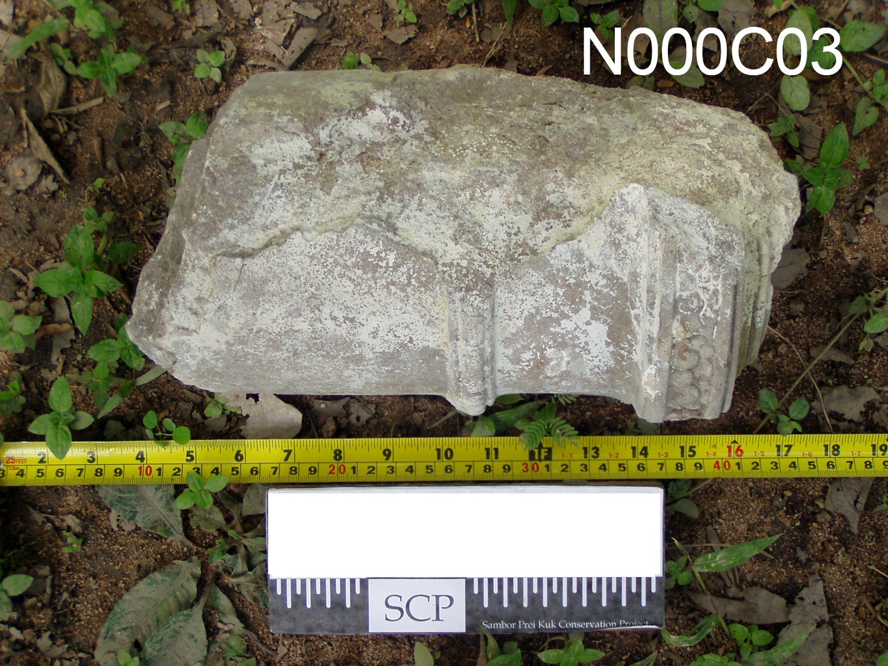
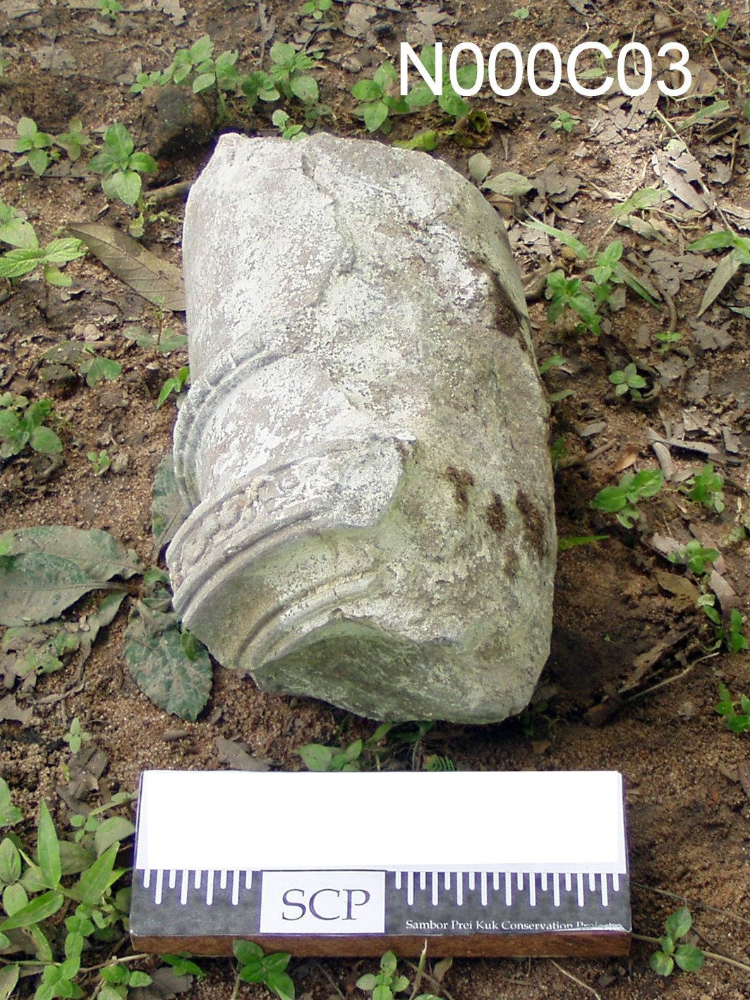

N000C03 Serial No. 404
| Serial No. | 404 |
|---|---|
| Object No. | N000C03 |
| Item | None |
| Actual Size (cm) | L: -, W/D: 15, H: 31 |
| Estimated Original Size (cm) | L: -, W/D: 15, H: - |
Note
Colonette fragment: is round, ornamented with a motif foliage row and many squares row. It was broken nearly a middle part.

